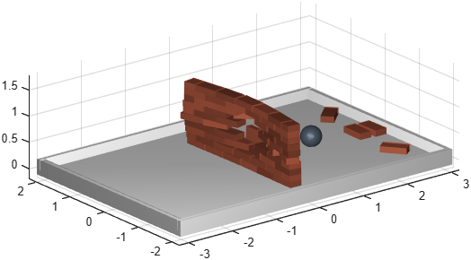

Wall of bricks laid in a running bond
Function phx.assembly.wall | Package: phx.assembly
phx.assembly.wall fills a box-shaped wall volume with loose
brick bodies. The overall Size of the wall together with the
Rows and Columns counts define the
brick size — a brick is x/Columns long, as thick as the wall and z/Rows
high. The wall origin lies at the middle of its base, so the wall spans −x/2..x/2 in length,
−y/2..y/2 in thickness and 0..z upwards.
The rows are laid in a running bond: every even row is shifted by half a brick against the odd
rows. The HalfBricks option decides how the shifted rows end at the
sides — closed by a half brick at each side so that the wall is flush, or left open with one
brick less than an odd row.
There is no mortar: the bricks are ordinary dynamic bodies resting on each other, so the wall
stands by gravity and friction alone and collapses realistically when something hits it. By
default the bricks are tinted slightly differently
(RandomTint), which makes the bond visible without any texture.
bricks = phx.assembly.wall creates the bricks in the current
axes and returns them as a 1×n phx.Body array, row by row: the
bottom row first and left to right (in the +x direction) within a row. The body names
("brick<row>_<column>") carry the same indices.
bricks = phx.assembly.wall(ax,___) draws into the given axes
instead of the current axes; an empty target ([]) creates the
bricks without graphics.
| Option | Default | Description |
|---|---|---|
| Size | [2 0.2 1] | Overall dimensions [x y z] of the wall — its length x, its thickness y and its height z. |
| Rows | 8 | Number of brick rows stacked on top of each other. |
| Columns | 8 | Number of bricks in an odd (unshifted) row. |
| HalfBricks | true | How the shifted even rows end at the sides. true closes them with a half brick at each side (flush wall, Columns+1 bricks per even row); false leaves them open (Columns−1 bricks, inset by half a brick at both ends), which leaves the toothed edge a wall continues from. An open wall needs at least two columns, otherwise the error phx:wall:invalidColumns is raised. |
| Density | 2000 | Density of the brick material (kg/m3); the brick masses and inertias follow from the geometry. |
| Color | [1 1 1] | Common color of all bricks. |
| RandomTint | 0.1 | Random shade variation between the bricks (0..1). Every brick is darkened by its own random factor, brickColor = Color*(1 − rand*RandomTint), so the shades differ while the hue stays; 0 leaves all bricks in exactly the same color. Random numbers are drawn from the global generator (like rand), so a wall is reproduced by seeding it first with rng. |
| Friction | [0.5 0 0] | Friction coefficients of all bricks. |
| Position | [0 0 0] | World position of the wall origin (the middle of its base). |
| Orientation | eye(3) | World rotation of the wall as a 3×3 rotation matrix. |
| EulerAngles | [0 0 0] | World rotation of the wall as Euler angles (z→y→x order), an alternative to Orientation. |
clf; view(3); axis equal; grid on; camlight headlight; phx.assembly.arena("Size", [6 4 0.2]); bricks = phx.assembly.wall("Size", [3 0.25 1.2], "Rows", 10, ... "Columns", 6, "EulerAngles", [0 0 pi/2], ... "Color", [0.7 0.35 0.25], "RandomTint", 0.3); ball = phx.Body("Shape", {"Sphere", "Diameter", 0.4, "Density", 4000}, ... "Position", [-2.5 0 0.6], "LinearVelocity", [10 0 1]); sim = phx.Simulation; sim.step(2, 1000, 20); delete(sim);
